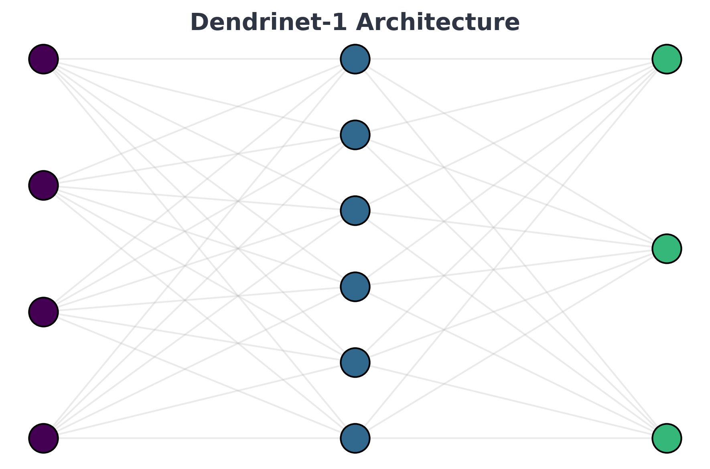
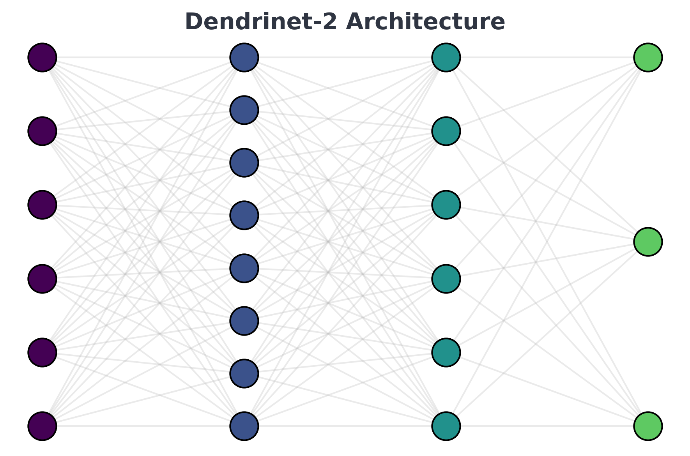
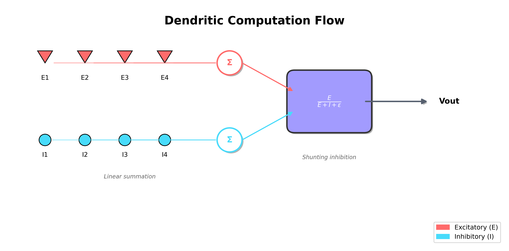

Key Concepts and Overview#
This page explains the fundamental concepts behind dendritic computing and how they are implemented in the Dendritic Modeling framework.
Biological Background and Inspiration#
In biological neurons, dendrites are branch-like structures that receive inputs from other neurons. Unlike the simplified model used in artificial neural networks, where a neuron is treated as a single computational unit, real neurons have complex dendritic trees with thousands of branches that perform sophisticated computations before signals reach the cell body (soma).
Key properties of biological dendrites include:
Compartmentalized Processing: Different dendritic branches can act as independent computational units.
Nonlinear Integration: Dendrites can perform nonlinear operations on inputs, such as coincidence detection or local amplification.
Active Properties: Dendrites contain voltage-gated ion channels that enable them to generate local spikes and perform complex operations.
Synaptic Plasticity: Dendritic synapses can change strength independently, allowing for branch-specific learning.
Excitation-Inhibition Balance: Excitatory and inhibitory inputs interact in dendrites to control neural activity.
Network Architecture#
The dendritic modeling framework implements a sophisticated network architecture inspired by biological principles:

: Dataflow diagram of the EINetClassifier model. Blue arrows represent excitatory data flow, red arrows represent inhibitory data flow.#
The architecture consists of several key components:
EINetClassifier: The top-level model that processes external input data
ExcitationInhibitionNetwork: Contains one or more excitation-inhibition layers
ExcitationInhibitionLayer: Contains two dendritic layers (Dendrinet)
Dendrinet: Specialized feedforward multilayer perceptron with dendritic branches


: Detailed dataflow in a Dendrinet model showing branch factors and layer connectivity.#
Key Computational Components#
Dendritic Branches#
In our framework, dendritic branches are computational units that process inputs before sending signals to the cell body. Each branch:
Receives a subset of inputs (sparse connectivity)
Applies nonlinear transformations
Integrates signals locally before sending them to the soma
TopKLinear Layer#
The TopKLinear class implements selective synaptic activation, a key feature of dendritic computation:
# Example of sparse connectivity through TopKLinear
from dendritic_modeling.dendrinet import TopKLinear
# A layer where each output unit connects to only 10 of the 100 input features
sparse_layer = TopKLinear(in_features=100, out_features=50, K=10)
Mathematical formulation:
`
y = (W ⊙ M)x + b
`
Where M is a binary mask retaining only the top k elements in each row of W.
TopK Selection Strategies#
The framework offers three strategies for selecting the top K connections in dendritic branches:
Standard TopK (default): The traditional deterministic approach that selects connections based solely on weight magnitude.
# Configure a model to use standard TopK selection model_config = { "model": { "network": { "parameters": { "topk_strategy": "standard", # other parameters... } } } }
Stochastic TopK: A probabilistic approach that selects connections based on a probability derived from weight rank.
# Configure a model to use stochastic TopK selection model_config = { "model": { "network": { "parameters": { "topk_strategy": "stochastic", "topk_noise_level": 0.2, # Optional: adds noise to weight values # other parameters... } } } }
Stochastic selection offers several benefits:
Mitigates overfitting by introducing regularization
Enables better exploration during training
Increases model robustness to minor variations in input
Variance-Based TopK: A data-driven approach that selects connections based on both weight magnitude and input variance.
# Configure a model to use variance-based TopK selection model_config = { "model": { "network": { "parameters": { "topk_strategy": "variance", # other parameters... } } } }
Variance-based selection:
Prioritizes connections to high-variance inputs that carry more information
Combines statistical properties of the data with learned weights
Adapts connection topology to the distribution of the input data
Can improve feature selectivity and reduce redundancy
These strategies can be selected through the topk_strategy parameter in the network configuration, providing flexibility to optimize models for different tasks and datasets.
BlockLinear Layer#

Block Linear Architecture: Shows the detailed structure of the BlockLinear layer and how it handles information aggregation through the dendritic tree.#
The BlockLinear class handles information aggregation through the dendritic tree by:
Generating structured masks based on branch factors
Controlling information flow between layers
Creating compartmentalized processing paths


: Detailed view of information flow in the second layer of a Dendrinet.#
Nonlinear Activation Functions#
The framework implements specialized activation functions:
ParametricTanh: A trainable activation function with learnable parameters:
` f(x) = m * tanh(x + b) `where m (multiplier) and b (bias) are learned during training.Shunting Inhibition: Division-based inhibition rather than subtraction
Excitation-Inhibition Balance#
The framework maintains a careful balance between excitatory and inhibitory signals through:
Separate Pathways: Distinct processing for excitatory and inhibitory inputs
Shunting Inhibition: When enabled (
use_shunting=True), inhibitory inputs can effectively negate excitatory onesDynamic Balance: Adaptive adjustment of excitation-inhibition ratios during learning
Training and Learning#
The framework supports several specialized training strategies:
MLE (Maximum Likelihood Estimation): End-to-end training of all components
Freeze Layers: Progressive training from input to output
Two-Step Training: Pretraining followed by fine-tuning
Sequential Input Network: Training input transformation before dendritic components
Advanced Features: - Dynamic gradient scaling for deep dendritic networks - Reactivation mechanisms to prevent branch “death” - Branch-specific learning allowing specialization
Comparison with Traditional ANNs#
Traditional ANNs vs. Dendritic Networks:
Feature |
Traditional ANNs |
Dendritic Networks |
|---|---|---|
Basic unit |
Single computational unit (neuron) |
Neuron with multiple branches |
Connectivity |
Typically dense |
Sparse (TopK connections) |
Input integration |
Linear summation |
Nonlinear, compartmentalized |
Activation |
Global activation function |
Branch-specific activations |
Learning |
Uniform weight updates |
Branch-specific specialization |
Computational complexity |
Generally higher |
Can be lower with sparse connectivity |
Feature extraction |
Distributed across weights |
Localized in specific branches |
Practical Applications#
Dendritic networks are particularly suitable for:
Pattern Recognition: Leveraging branch specialization
Noise-Robust Classification: Multiple processing pathways
Continual Learning: Reduced catastrophic forgetting
Low-Power Computing: Sparse connectivity benefits
Neuromorphic Hardware: Compatible with emerging architectures
Example: XOR Problem#
The XOR logical operation demonstrates the power of dendritic computation:


Dendritic solution to the XOR problem using branch-specific processing#
Further Reading#
For more detailed information:
London, M., & Häusser, M. (2005). Dendritic computation. Annual Review of Neuroscience, 28, 503-532.
Poirazi, P., Brannon, T., & Mel, B. W. (2003). Pyramidal neuron as two-layer neural network. Neuron, 37(6), 989-999.
Guerguiev, J., Lillicrap, T. P., & Richards, B. A. (2017). Towards deep learning with segregated dendrites. eLife, 6, e22901.
See ../additional_resources for more resources on dendritic computing.